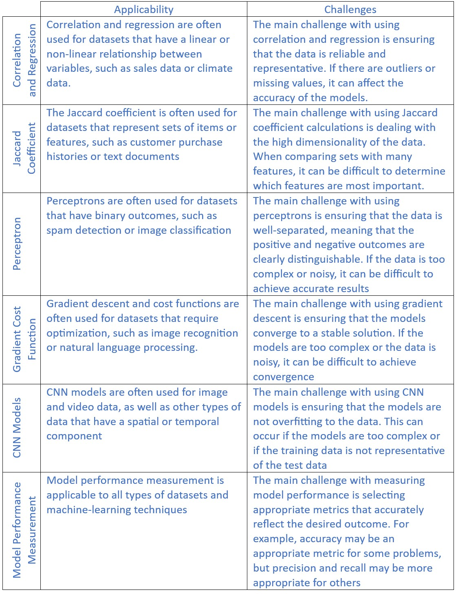

E-Portfolio Activities
As each activity was completed, I compiled this summary of how each linked with the learning objective
Learning Objective: Articulate the legal, social, ethical, and professional issues faced by machine learning professionals.
As with any field that deals with data and technology, machine learning professionals face a range of legal, social, ethical, and professional issues. Here are some examples of issues that may arise in relation to the specific machine learning techniques you mentioned:

Overall, machine learning professionals must be aware of the potential legal, social, ethical, and professional issues that could arise when using these techniques and take steps to address them appropriately. This includes staying up to date with relevant laws and regulations, ensuring that models are designed with fairness and accuracy in mind, and communicating results clearly to stakeholders.
Learning Objective: • Understand the applicability and challenges associated with different datasets for the use of machine learning algorithms.
The applicability of different datasets for machine learning algorithms depends on the nature of the problem being addressed and the characteristics of the data. Here are some examples of datasets that may be used with the machine learning techniques you mentioned, along with some associated challenges:
